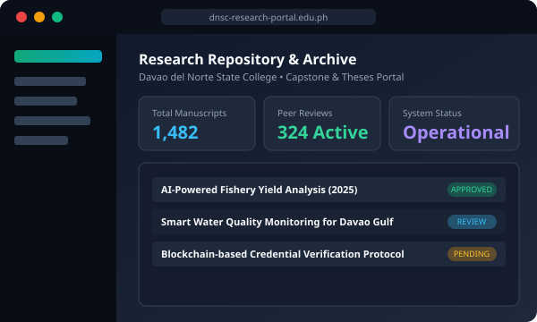
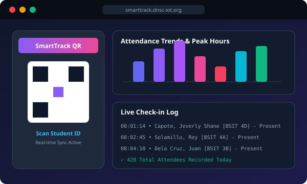
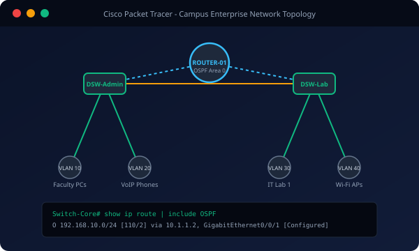

Career Objective
Education Background
Bachelor of Science in Information Technology
Davao del Norte State College (DNSC) • Institute of Computing
Focused on Full-Stack Web Development, Database Management, Network Administration, Software Engineering, and Applied Information Systems.
Senior High School Education
Panabo National High School • Panabo City
Graduated with HonorsJunior High School Education
Panabo National High School • Panabo City
Junior High CompleterExperience & Leadership
Lead Researcher & Full-Stack Developer
Davao del Norte State College • Capstone ProjectSpearheaded the design, architecture, and development of the college capstone research platform. Coordinated sprint goals, supervised technical manuscript formulation, and guided team members across frontend and backend implementations.
- Orchestrated full development lifecycle from database schema design to responsive UI prototypes.
- Implemented secure authentication, peer-review routing workflows, and document archiving algorithms.
- Defended system architecture and research methodology during academic defense panel evaluations.
Officer & Technical Committee Head
Institute of Computing Student Council / IT SocietyOrganized departmental events, technical workshops, and coding seminars for fellow IT students. Managed technical logistics, live event operations, and digital assets.
- Facilitated hands-on workshops on Git/GitHub fundamentals and modern web technologies.
- Mentored junior students in introductory programming courses (Python, Java, Web Development).
Freelance Web Developer & UI Designer
Independent & Client ProjectsDesigned and delivered customized responsive websites, landing pages, and management prototypes for student organizations and micro-enterprises.
Technical & Professional Skills
Frontend Technologies
Backend & Languages
Databases & Networking
Tools & Leadership Skills
Featured Projects

DNSC Research Repository & Archive
A web-based digital archive and manuscript evaluation system with role-based access for students, advisers, and faculty evaluators.

SmartTrack – Event Attendance Monitor
Automated campus check-in system with dynamic QR generation, instant validation, attendance report exports, and peak-hour metrics.

Enterprise Network & OSPF Routing
Simulated multi-tier campus network infrastructure with VLAN isolation for laboratories and admin offices, DHCP pooling, and resilient routing.

Interactive One-Page CV Website
Fully responsive portfolio platform showcasing credentials, skill indicators, and ATS-compliant print layouts with instant PDF generation.
Achievements & Certifications

CCNA: Switching, Routing, and Wireless Essentials
Cisco Networking Academy • Davao del Norte State CollegeDemonstrated comprehensive proficiency in switch configuration, VLAN routing, wireless LAN controllers, and network troubleshooting.
Dean's Honor List – Consistent Academic Awardee
DNSC Institute of Computing (2022 – 2025)Consistently attained high general weighted averages (GWA), recognized for scholastic dedication across software programming, networking, and theoretical computing courses.
Student Research Congress Presenter
Annual College Research ColloquiumPresented capstone methodology and findings on automated academic document repositories and student evaluation tracking mechanisms.
Web Development & Cybersecurity Seminars
Regional IT Symposiums & WorkshopsParticipated in comprehensive technical training covering modern JavaScript standards, secure API integration, and cloud-native application deployment.
Interested in collaborating or discussing an opportunity?
I am currently open to internship opportunities, freelance web development, or entry-level IT positions. Feel free to reach out directly!